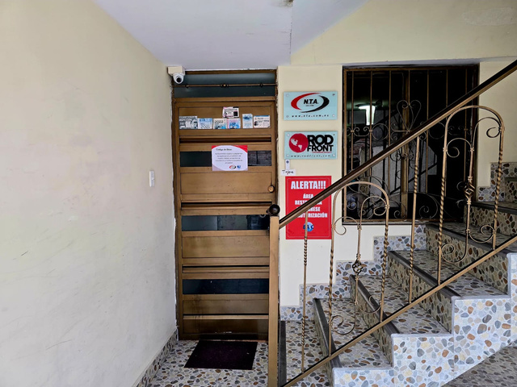
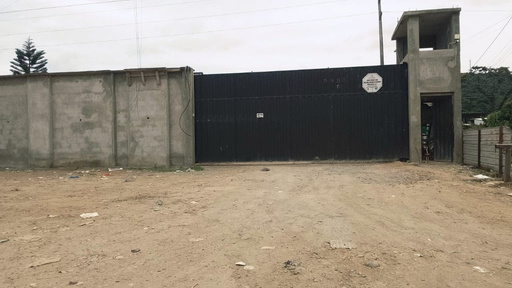
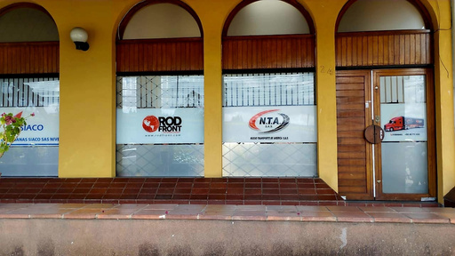
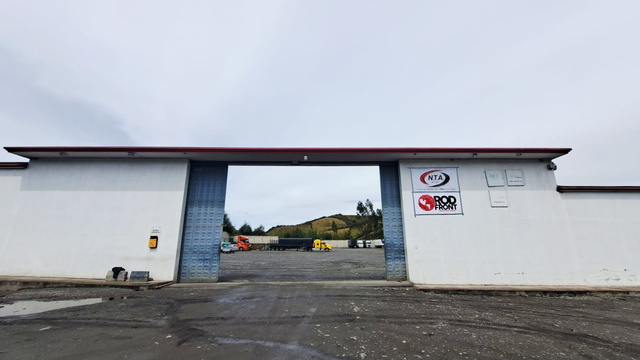
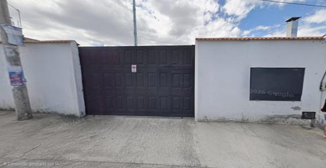
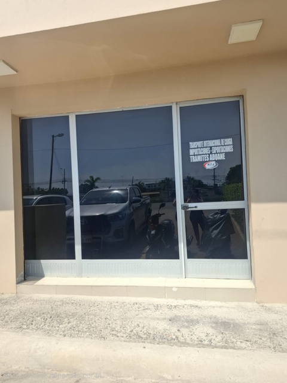

Tulcán
Av. Argentina y Juan León Mera S/N
Contacto
Escríbenos o llámanos. Completa el formulario y se abrirá WhatsApp con tu solicitud lista para enviar.
Nuestras sedes
Seis puntos de atención en Ecuador y Colombia.

Av. Argentina y Juan León Mera S/N

Ingreso Sur a Tulcán, junto a la Estación de Servicio de Centinela del Norte

C.C. Rumichaca, Local 24

Calle Leonidas Proaño S/N y Panamericana Norte

Urb. Urbasol, Av. La República y Los Almendros

Km 24, Vía a Daule